株式会社インフォネット（制作・保守運用パートナー：株式会社ITLINE）｜2026年10月16日
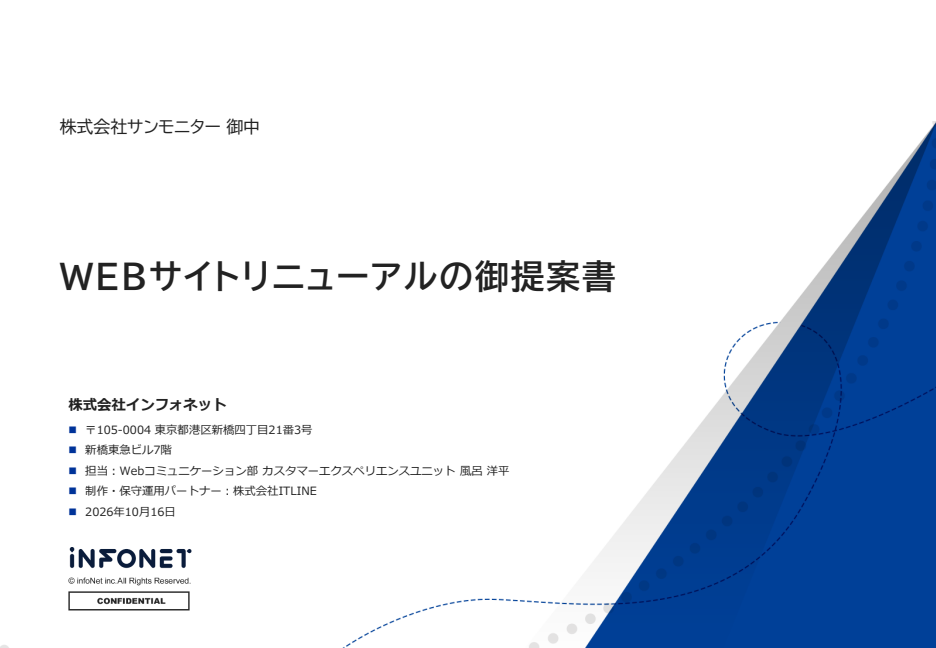
PDF・22ページ。現状分析・全体戦略・デザイン案・製品データベース・CMS・SEO・保守運用・スケジュールまで、ご提案の本編です。
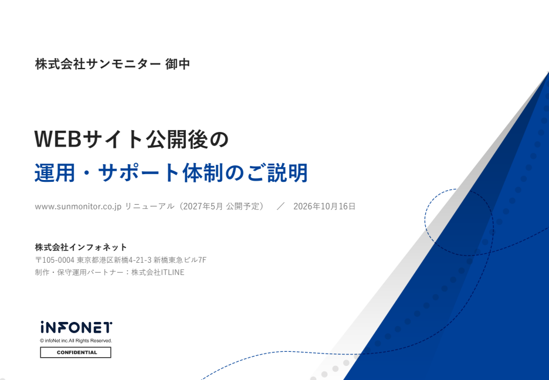
PDF・23ページ。公開後のサポート窓口、更新の手順、保守・セキュリティの内容をまとめています。
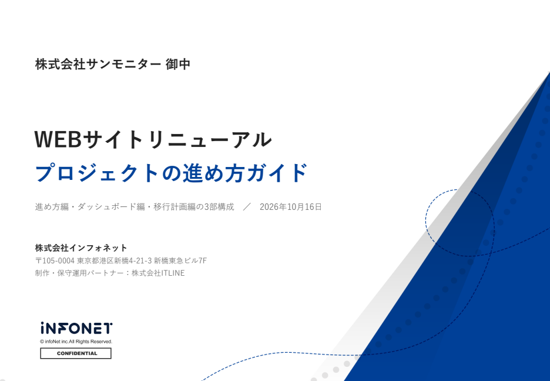
PDF・23ページ。スケジュール、貴社にお願いすること、現行サイトからの移行の進め方です。
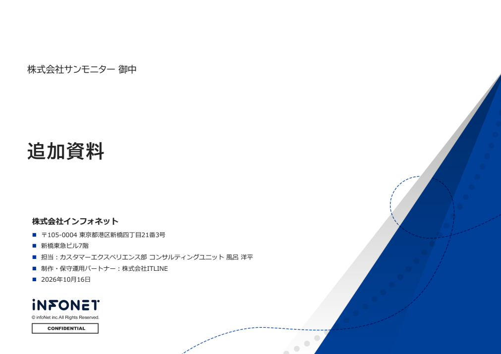
PDF・22ページ。セキュリティ対策・会社概要・構築実績など、会社としての体制のご紹介です。
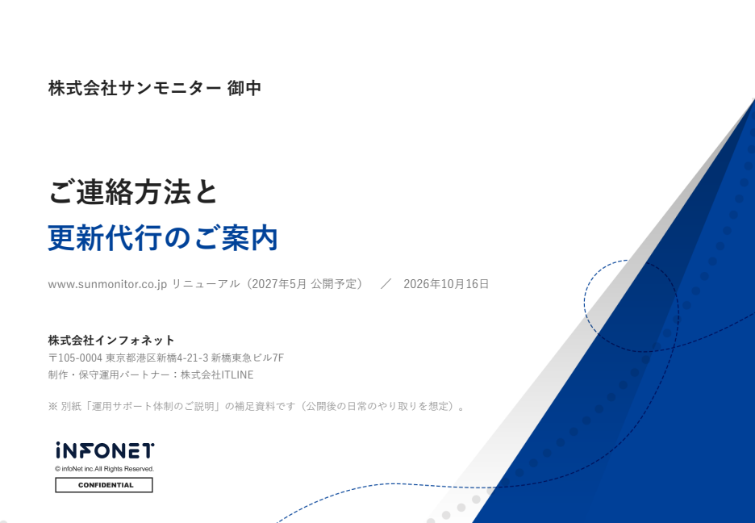
PDF・12ページ。ご連絡の方法と、更新代行のご依頼から反映までの流れです。
※ 御提案書が本編、ほかの4冊は運用・進行・会社体制の詳細です。御見積書は別途ご提示いたします。
STANDARD通常のデザイン案
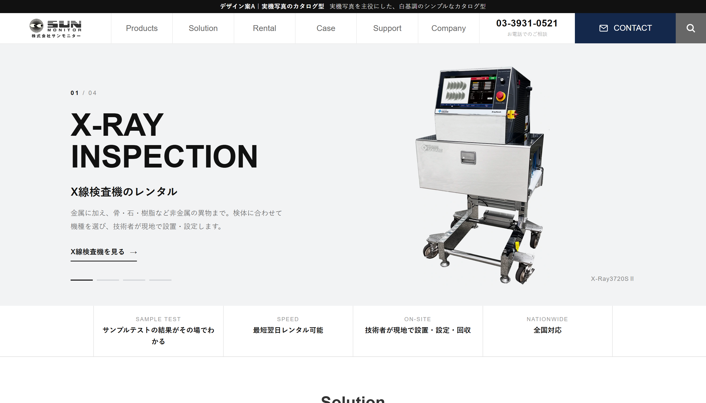
実機写真を主役にした、白基調のシンプルなカタログ型。製品データベースのデモ付き。
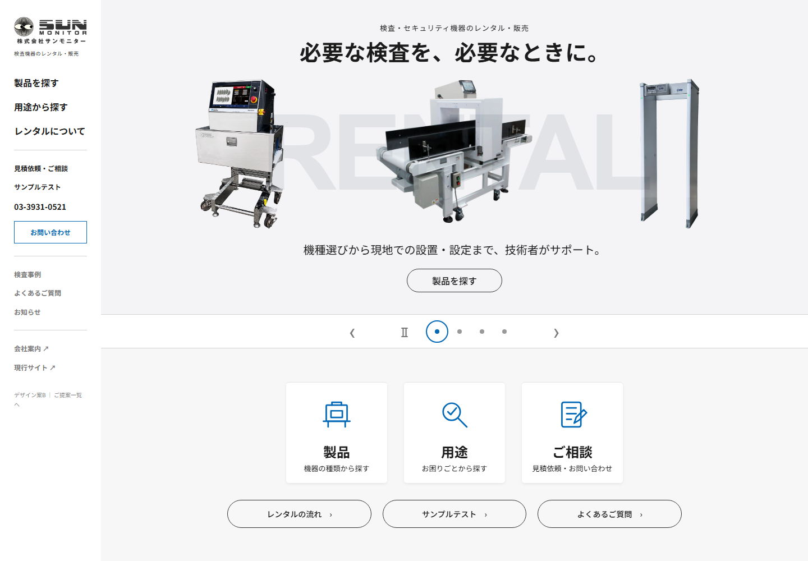
左に固定したメニューで、製品・用途・ご相談へ迷わず進める構成。
ILLUSTRATIONイラスト案
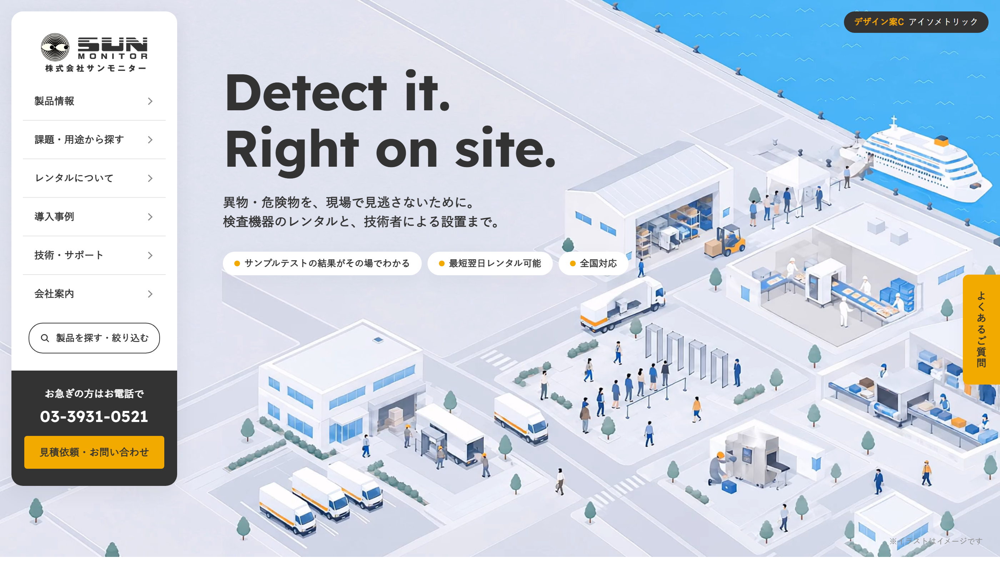
検査機器が活躍する街を、人やラインが動くイラストで描いたデザイン。
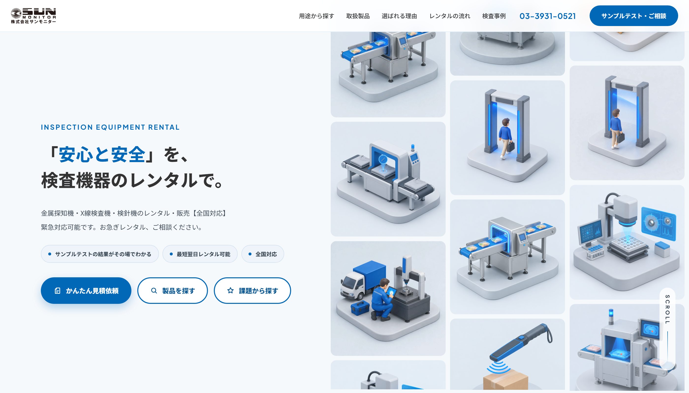
現行サイトの言葉「安心と安全」を見出しに、立体イラストで見せるデザイン。
DATABASE製品データベースのデモ（デザイン案Aに組み込み・実際に操作できます）
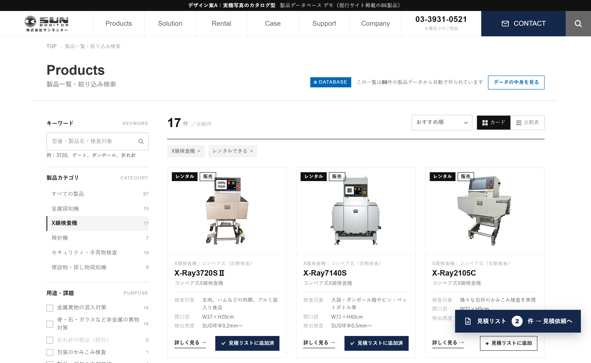
現行サイトの86製品をデータ化。カテゴリ・用途・レンタル／販売で絞り込めます。
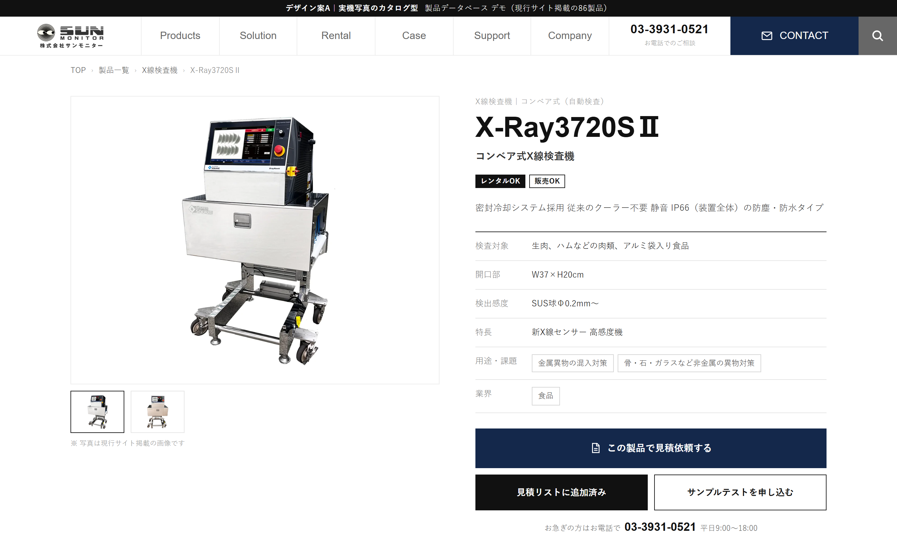
仕様表や関連製品を、登録したデータから自動で表示します。
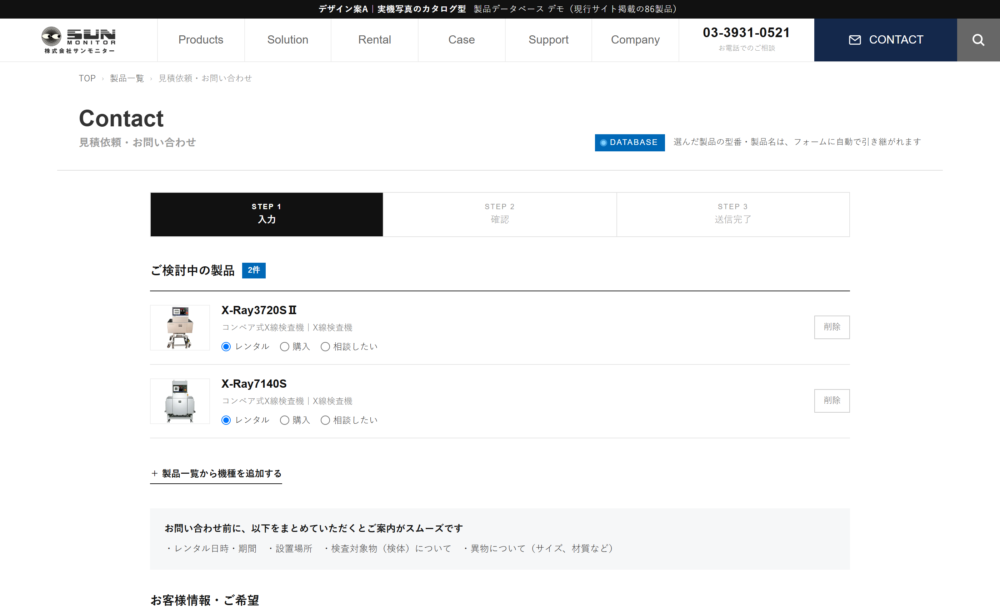
選んだ機種の型番が、見積依頼フォームにそのまま入ります（送信はされません）。
※ 製品データは現行サイト掲載の86製品から作成。カテゴリ・用途の分け方や比較表・見積リストは画面の一例で、実装範囲は要件定義で確定します。
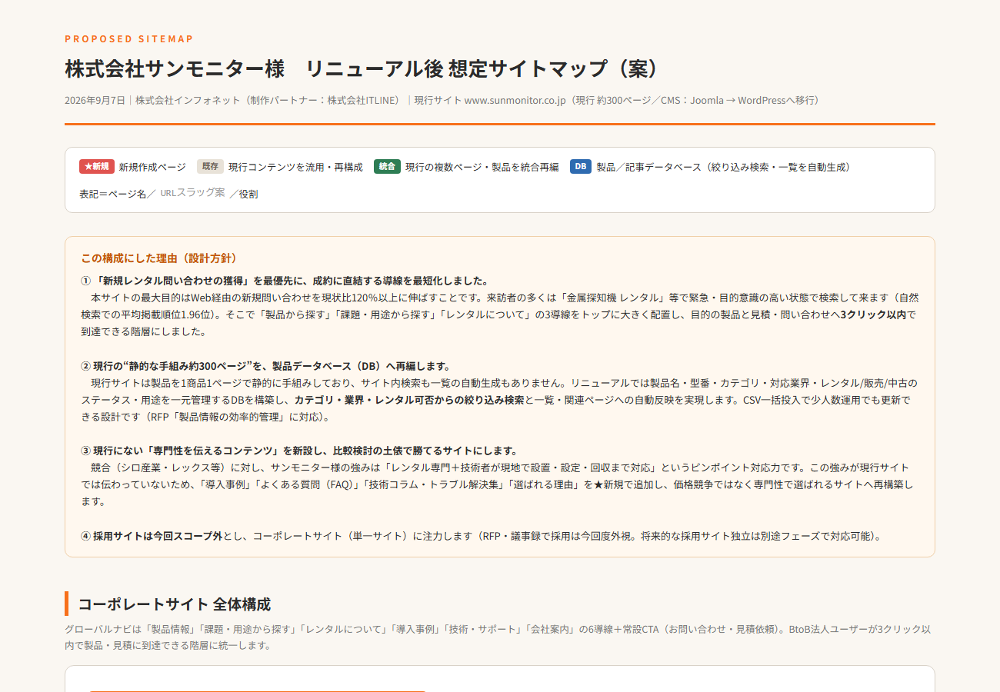
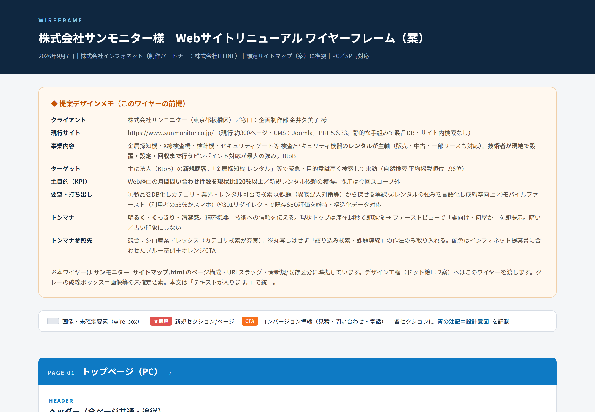
2026年9月10日にご連絡いただいた変更（デザイン案・サイトマップ・CMS選定理由・SEO方針は提案段階で必須としない）を反映しています。 弊社は4項目とも具体案をご提示したうえで、あわせてその決定プロセスも御提案書でご説明しています。
| 提案依頼書のご要件 | 区分 | 対応資料 |
|---|---|---|
| 提案資料 | 必須 | ✔ 御提案書（PDF・22ページ） |
| デザイン案（PC・スマホ） | 任意9/10変更 | ✔ 通常のデザイン案A・B／イラスト案C・D（いずれも動くHTML・PC/SP）＋御提案書P8〜P12 |
| サイトマップ | 任意9/10変更 | ✔ 想定サイトマップ（HTML／PDF・7ページ）＋主要ページのワイヤーフレーム＋御提案書P7 |
| CMS選定理由 | 任意9/10変更 | ✔ 御提案書P13「製品データベースと製品の探し方」・P14「製品データベースのデモ」（デザイン案Aで実際に操作可）・P15「CMS選定理由（WordPress）」（決定の考え方を明記） |
| SEO方針 | 任意9/10変更 | ✔ 御提案書P16「SEO・AIO方針」（策定プロセス＋構造化データ／301リダイレクト／既存評価の維持） |
| プロジェクト体制 | 必須 | ✔ 御提案書P18「実施体制」＋追加資料P11「実施体制図」 |
| スケジュール | 必須 | ✔ 御提案書P19「スケジュール（2027年5月公開）」・P20「移行計画」＋プロジェクトの進め方（23ページ） |
| 見積書（詳細内訳） | 必須 | 別途ご提示（全項目明細） |
| 保守・運用プラン | 必須 | ✔ 御提案書P17「保守・運用プラン」＋運用サポート体制のご説明（23ページ）＋ご連絡方法と更新代行のご案内（12ページ） |
| 類似実績 | 必須 | ✔ 御提案書P21「類似実績」（製品データベースを持つ製造業サイト2件を詳しく掲載）・P22「会社概要」＋追加資料P13〜P22（会社概要・構築実績） |
| ご提示をお願いされた点 | 対応資料 |
|---|---|
| どのようなプロセスで要件定義やデザイン制作を行うか | ✔ 御提案書P8「デザイン制作のプロセス」・P18「実施体制」・P19「進行管理について」＋プロジェクトの進め方「進め方編」 |
| CMSやサイト構成をどのような考え方で決定するか | ✔ 御提案書P15「決定の考え方」（8基準で比較） |
| SEO方針をどのように策定するか | ✔ 御提案書P16「SEO方針の策定プロセス」（現状分析→キーワード設計→実装→計測・改善） |
| プロジェクト成功のために重視している点 | ✔ 御提案書P3「プロジェクト成功のために重視している点」 |